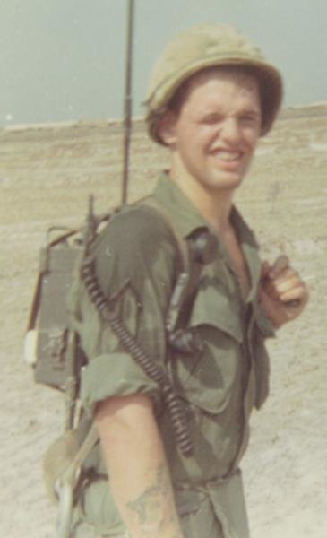

United States Army — Vietnam War

Arthur McQuade Jr. grew up in Barrington, Rhode Island, residing with his family at 51 Washington Road.
Specialist Fourth Class Arthur McQuade was born on November 15, 1950, to a third-generation English and Irish American family from East Providence, Rhode Island. His parents owned and operated McQuade's Market in Riverside before the family later moved to 51 Washington Road in Barrington.
Arthur grew up in Barrington where he attended local schools and was well known throughout the community. Friends later recalled stopping by his father's neighborhood grocery store, attending dances at Holy Angels Church with him, and remembering his good-natured personality and sense of humor in the classroom.
On his eighteenth birthday, November 15, 1968, Arthur answered his country's call by enlisting in the United States Army. After completing infantry training, he deployed to the Republic of Vietnam in February 1968.
He served as an infantryman assigned to the 205th Aviation Company, 11th Aviation Battalion, 12th Aviation Group, 1st Aviation Brigade. Fellow soldiers remembered him as one of the youngest members of the unit but also one of the most courageous.
On April 29, 1968, while supporting a reconnaissance mission conducted by the 1st Infantry Division in Binh Duong Province, South Vietnam, Specialist Fourth Class McQuade came under hostile enemy fire.
While courageously laying down protective fire to cover the movement of friendly forces, he was mortally wounded by small-arms fire. His actions helped protect fellow soldiers during the engagement and reflected the courage and selflessness expected of an American infantryman in combat.
Arthur McQuade was only eighteen years old when he gave his life in service to his country.
Specialist Fourth Class Arthur McQuade is buried in Gate of Heaven Cemetery in East Providence, Rhode Island. His name is permanently honored among Barrington's Vietnam War fallen, remembered by his family, friends, fellow soldiers, and the community that watched him grow from a neighborhood boy into a young soldier who made the ultimate sacrifice.
Photographs, memorial banners, newspaper articles, military records, cemetery photographs, and additional historical materials may be added to this archive as they become available.